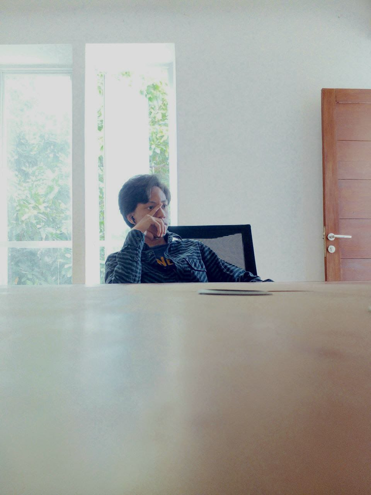
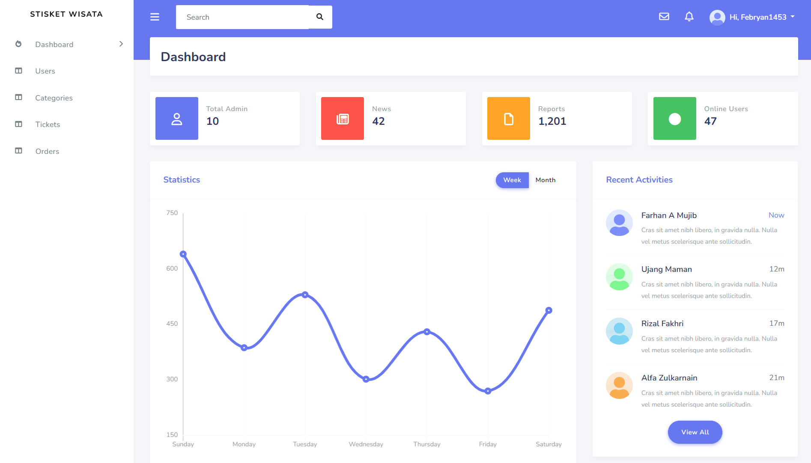
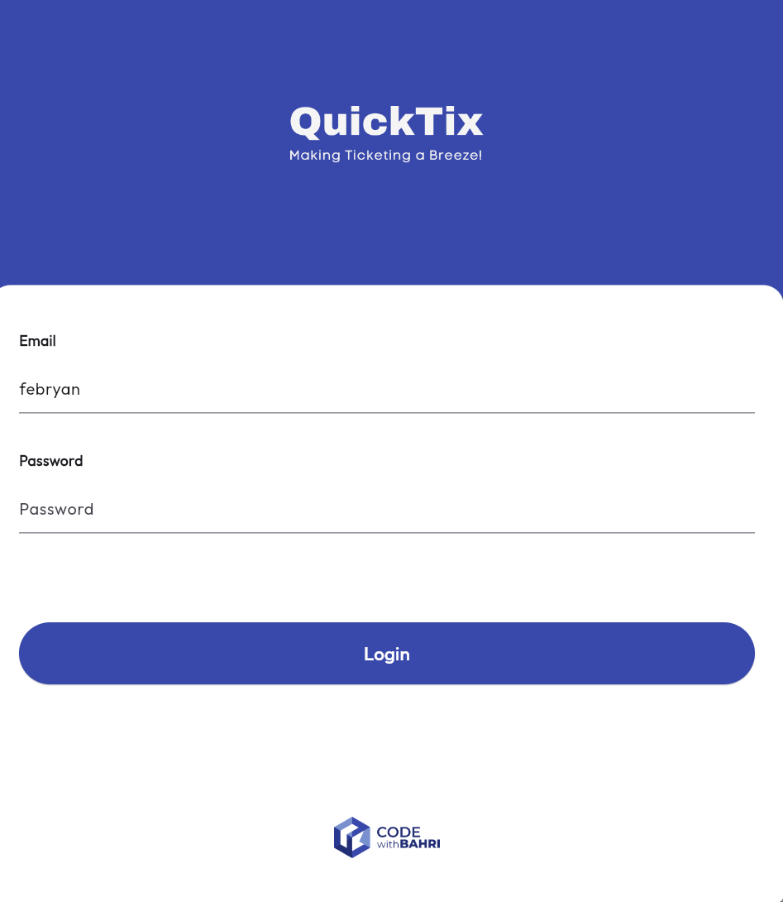
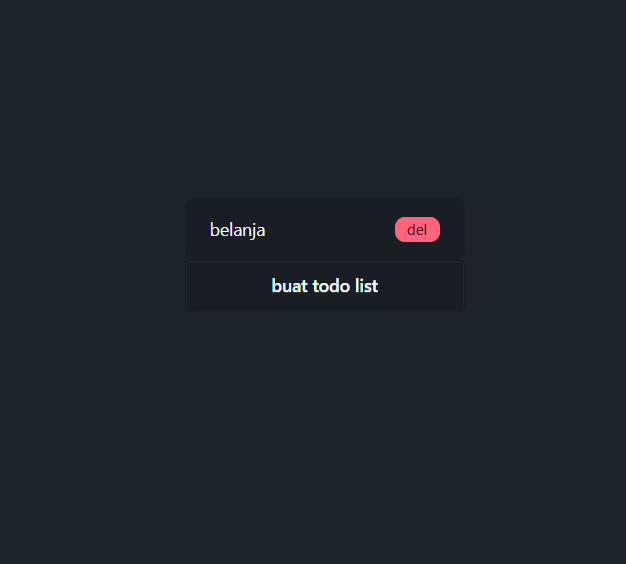
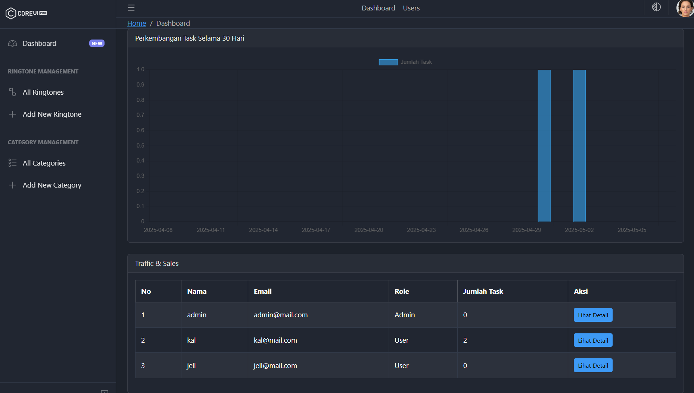

Terbuka untuk peluang & kolaborasi// Fullstack Developer
Membangun sistem internal enterprise — document management, legal, SSO, dan booking — dengan Go, NestJS, dan React.
Fullstack developer yang fokus membangun sistem internal enterprise — document management, legal, SSO, hingga booking. Terbiasa bekerja dengan Go, NestJS, dan React di atas PostgreSQL, Docker, dan arsitektur yang rapi.
Saya senang menangani logika backend yang kompleks (workflow approval, RBAC, audit) sekaligus merapikan antarmukanya di frontend.
Tech stack
Membangun dan memelihara berbagai sistem internal: document management (EDMS), legal case management, single sign-on, booking ruangan & kendaraan, perpustakaan digital, dan portfolio management — dari backend (workflow, RBAC, audit) sampai frontend.
Politeknik IDN
Politeknik IDN
Enterprise / Fullstack
Helpdesk/ticketing internal dengan approval berjenjang (Helpdesk → Teknisi → Expert → Principal Reviewer). Workflow-nya berbasis data, jadi role & tahap baru bisa ditambah tanpa deploy.
Electronic Document Management System: dokumen dari templat, penomoran otomatis, approval berjenjang per versi, verifikasi keaslian via QR code, dan arsip ber-permission.
Portal manajemen perkara hukum: Legal Opinion & Document Review dengan RBAC + PBAC, versioning dokumen, dan alur status yang audit-friendly.
Booking ruangan sekaligus kendaraan dengan approval (User → General Affairs), OTP/2FA, notifikasi realtime (SSE), booking berulang mingguan, dan kalender interaktif.
Perpustakaan digital multi-role (Member/Librarian/Admin): manajemen buku, peminjaman & perpanjangan dengan tracking keterlambatan, rating, review, dan notifikasi.
Single sign-on untuk aplikasi internal: satu login Active Directory untuk masuk ke banyak aplikasi (OIDC), realm & client terkelola, dan deploy via GitLab CI/CD.
Project Portfolio Management System: manajemen portofolio proyek dengan event bus, reporting, audit logging, RBAC, dan penyimpanan berkas.
Open Source & Personal

Dashboard admin untuk memantau aplikasi pemesanan tiket wisata.
Lihat di GitHub


Tugas akhir di Politeknik IDN — backend untuk aplikasi to-do list.
Lihat di GitHubPunya proyek, peluang, atau sekadar ingin ngobrol soal teknologi? Senang mendengar kabar Anda.
haikalbaihaqi99@gmail.com